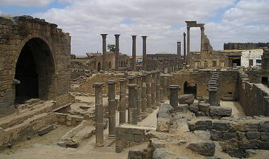
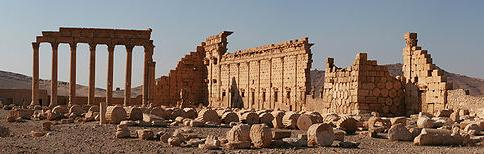
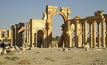
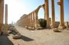
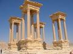
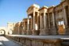
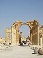
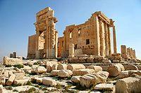

|
SIRIA ROMANA
Canatha,
Qanawat
Qanawat la antigua ciudad romana de Canatha se halla a100 km al sur
este de Damasco. Se encuentra a una altitud de unos 1200 m, cerca de un río y
rodeado de bosques.
Fue una ciudad de gran importancia durante la época romana. Esta posición se
explica la importancia de la abundancia y la riqueza de sus ruinas, que se
encuentran entre las más interesantes en el conjunto de la región árabe de Jabal
Al.
Destaca el conjunto de columnas que formaban parte de un siglo II, el templo
dedicado al dios sol Helios. Otro templo del mismo período dedicado a Zeus fue
construido con rica decoración de basalto. De este templo sólo hay seis columnas
de la izquierda. Otros templos son los dedicados a la deidad del agua del siglo III y otro a Athena del siglo II. También se han encontrado los restos de un
teatro, y un complejo termal.
Se han hallado un gran número de tumbas romanas y bizantinas situado en la
carretera procedente de Suweida.
Bosra
Bosra se localiza al sur de Siria, a 150
kilómetros de Damasco. En el 106 se convirtió en la capital de la provincia
romana de Arabia Pétrea, creada por Trajano después de la anexión del reino
nabateo. Situada en la vía Nova Trajana, pronto se convirtió en la guarnición
definitiva de la Legio III Cyrenaica. Destaca su teatro y la ciudad en si,
construida con basalto. Su estado se conservación es magnifico.

Damasco
Damasco, la capital de Siria, posiblemente la ciudad más antigua
continuamente habitada en el mundo.
Damasco cayó bajo el dominio de los griegos, romanos y bizantinos. Todos ellos
dejaron su huella en Damasco como los visitantes pueden observar fácilmente
todavía hoy. En la época romana, Damasco fue una de las diez ciudades más
importantes de La Decápolis. Recibió numerosos privilegios, especialmente
durante el reinado de la dinastía Siria de los emperadores romanos.
Parte del patrimonio de esta época son los restos de la planimetría romana que
Apolodoro diseñó. También hay parte del templo romano de Júpiter, que se erigió
en el sitio de un antiguo templo arameo (Hadad), donde está la mezquita omeya de
hoy, una parte se distingue por sus enormes columnas corintias con su rica
decoración capitales.
En época bizantina, un gran número de iglesias y monasterios fueron construidos,
y la mayoría de ellos han sobrevivido hasta el presente.
Palmira

La antigua Ciudad de "Palmira", que significa "ciudad de los árboles
de dátil" esta situada en el desierto de Siria, en la provincia de Hims a 3 km
de la moderna ciudad de Tadmor o Tadmir.
|
 |
En el 41 a.e.c los habitantes de Palmira huyeron de las tropas de Marco Antonio
al otro lado del Éufrates. En el siglo I Siria se convirtió en provincia romana
y la ciudad prosperó con el comercio de caravanas al estar situada en la ruta de
la seda.
Tras una visita, el emperador Adriano otorgó a Palmira los derechos de ciudad
libre y cambió el nombre a Palmyra Hadriana.
Tras la captura del emperador romano Valeriano en la guerra contra los sasánidas,
Palmira defendió las fronteras bajo el comando del gobernador Odaenathus. Tras
su asesinato, su viuda Zenobia en nombre de su hijo Vabalato, estableció en
Palmira la capital de su reino nabateo.
En el 272 fue derrotada por el emperador romano Aureliano la encadenó en cadenas
de oro a un carro durante su marcha triunfal. |
Luego fue perdonada y se retiró a una villa en Tibur. Tras una segunda revuelta de sus habitantes Palmira fue
arrasada en el 273. Diocleciano reconstruyó Palmira aunque la nueva ciudad era
más pequeña y estableció un campamento en sus cercanías como defensa contra los
sasánidas.
En el año 634 fue tomada por los musulmanes y en el 1089 fue completamente
destruida por un terremoto.
Templo de Bel en Palmira.
La principal atracción de Palmira son sus ruinas, entre las que se destaca el
templo de Bel. Edificado en el año 32, fue consagrado al culto de Bel,
derivación del término babilónico Baal, que significa amo. Era el dios supremo
de los habitantes de la ciudad, el dios de los dioses. En el templo, que fue
transformado en iglesia en el siglo IV, se hacían sacrificios de animales.
A pocos metros del templo comienza una gran columnata de 1200 m que era el eje
de la vieja ciudad, que llegó a tener cerca de 200.000 habitantes. A los lados de
la extensa columnata hay una serie de ruinas en mayor o menor grado de
conservación: el templo de Nebo, deidad babilónica; el templo funerario; el
campamento de Diocleciano, antiguo palacio de la reina Zenobia; el teatro el
ágora, donde se realizaban operaciones comerciales y se discutía. Un poco
alejado de la columnata hay un hermoso templo cuya función no se conoce con
exactitud, pero el edificio se conserva muy bien.
Saliendo de la ciudad, adentrándose un kilómetro en las montañas, hay un lugar,
con construcciones tipo torres cuadradas y macizas. Es el valle de las tumbas.
Hay tres tipos de tumbas y fueron construidas en los tres primeros siglos de
esta era. Algunas de estas construcciones podían llegar a albergar hasta 500
cuerpos.
|

Decumanus |

Tetrapylon |

Teatro |

Arco monumental |

Templo de Bel |
|